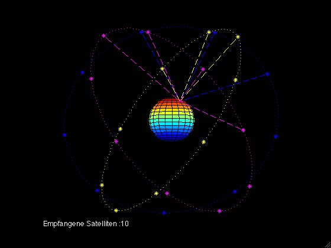

Характеристики приёма
Содержание:
Точность GPS:
| Источник погрешности | Среднеквадратичное значение погрешности, м |
|---|---|
| Нестабильность работы генератора | 6,5 |
| Задержка в бортовой аппаратуре | 1,0 |
| Неопределённость пространственного положения спутника | 2,0 |
| Другие погрешности космического сегмента | 1,0 |
| Неточность эфемерид | 8,2 |
| Другие погрешности наземного сегмента | 1,8 |
| Ионосферная задержка | 4,5 |
| Тропосферная задержка | 3,9 |
| Шумовая ошибка приёмника | 2,9 |
| Многолучёвость | 2,4 |
| Другие ошибки сегмента пользователя | 1,0 |
| Суммарная погрешность | 13,1 |
Точность ГЛОНАСС:
Согласно данным СДКМ на 18 сентября 2012 года, ошибки навигационных определений ГЛОНАСС (при p = 0,95) по долготе и широте составляли 3—6 м при использовании в среднем 7—8 КА (в зависимости от точки приёма). В то же время ошибки GPS составляли 2—4 м при использовании в среднем 6—11 КА (в зависимости от точки приёма).
Точность Beidou:
К концу 2012 г точность определения координат должна была составить 10 м.
Точность Galileo:
Система Galileo, как ожидается, обеспечит точность 30 см в низких широтах при одновременном приеме сигнала от 8-10 спутников. За счет более высокой, чем у спутников GPS орбиты, на широте полярного круга будет обеспечена точность 1 м.
Точность DORIS:
| Продолжительность сбора данных | Точность (1 спутник) | Точность (2 спутника) |
|---|---|---|
| 1 час | 1 м | 50 см |
| 1 день | 20 см | 15 см |
| 5 дней | 10 см | 7 см |
| 26 дней | 3 см | 1-2 см |